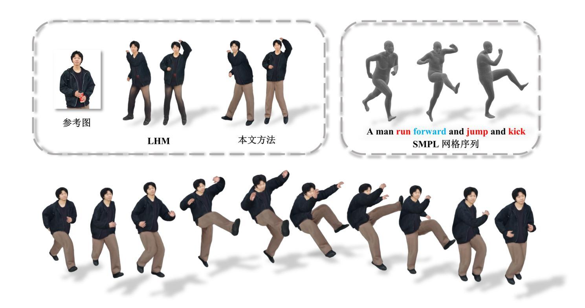
摘要
现有三维高斯数字人生成方法对输入质量要求苛刻，动态运动中容易因局部信息缺失导致衣物几何不连续，可控性与时序一致性也不足。针对这些问题，本文提出一种仅以单张半身照为输入、融合生成式补全与衣物结构解耦的数字人动画生成框架。首先，设计生成式补全与主体提取相结合的预处理模块，提升单图重建的完整性与身份一致性；继而，构建面向服装区域的结构解耦重建模块（CDRM），通过目标包络估计、高斯克隆与属性迁移实现复杂衣物的连续补全；再引入历史感知运动门控模块（PAMG），自适应抑制动作序列中的局部抖动、时序间断与幅值异常；最后，将优化后的动作序列作用于修复后的三维高斯表示，实现可部署于多种三维场景的文本可控数字人动画。
方法概览
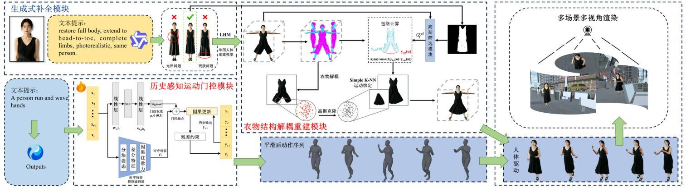
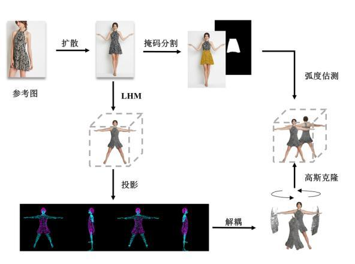
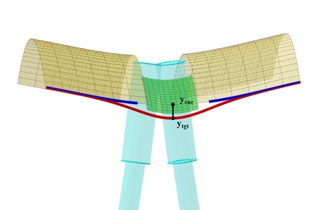
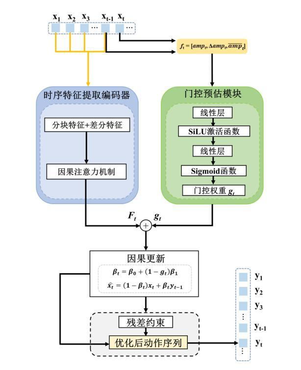
静态重建对比
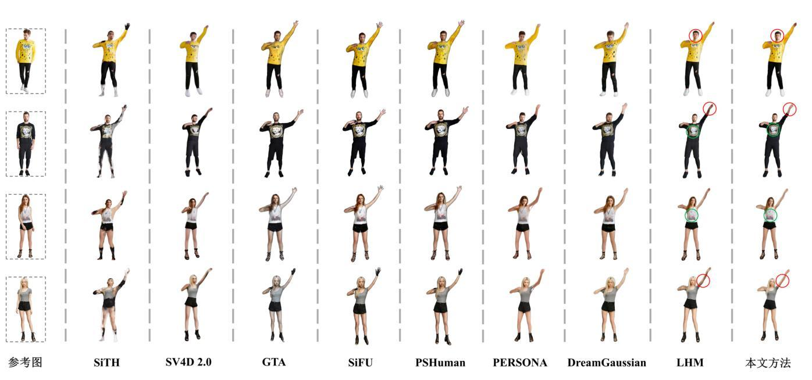
消融实验
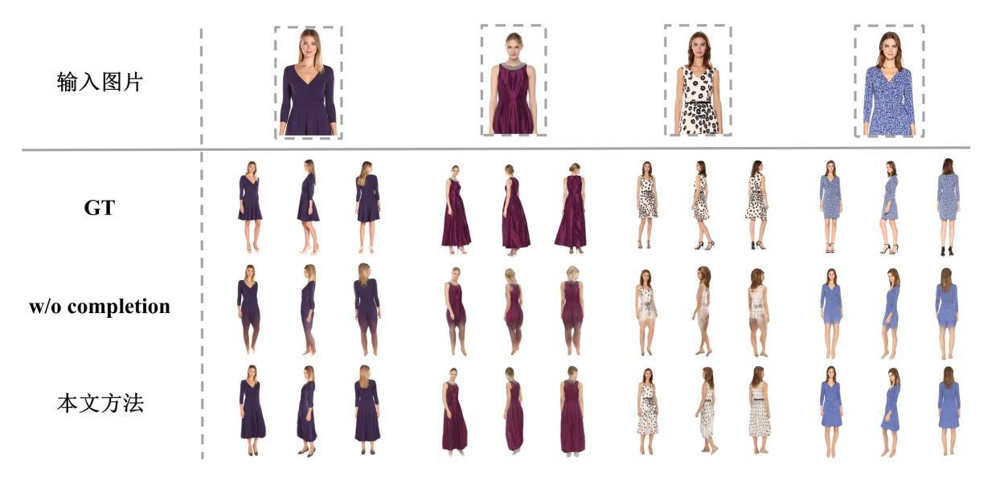
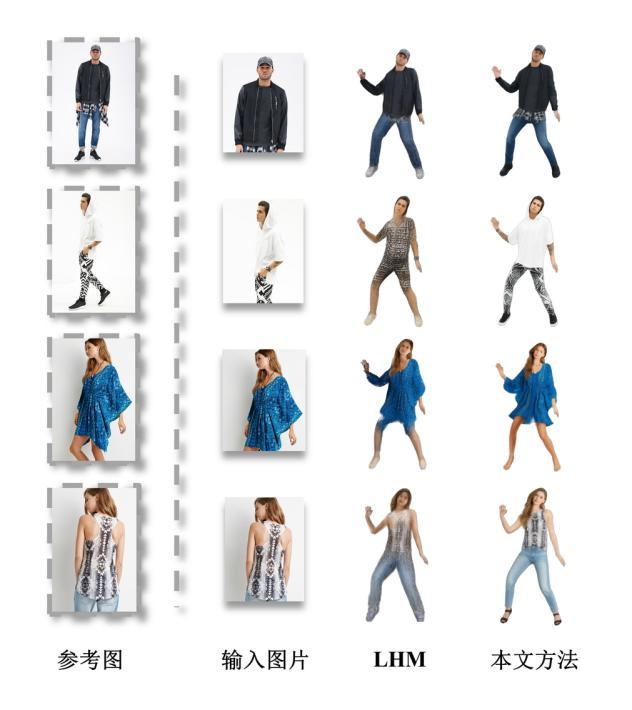
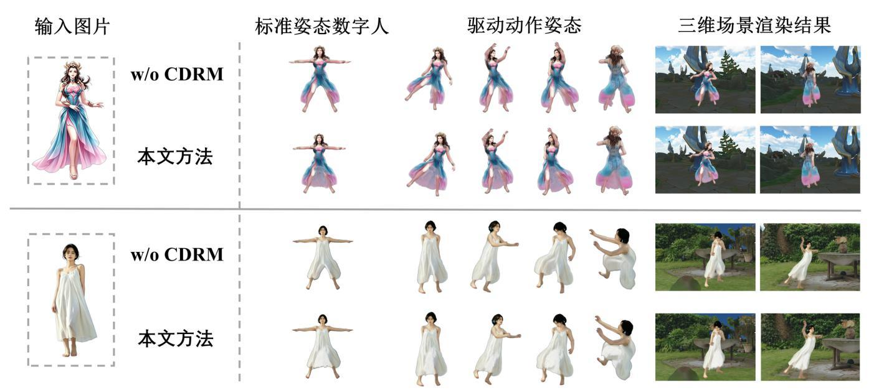
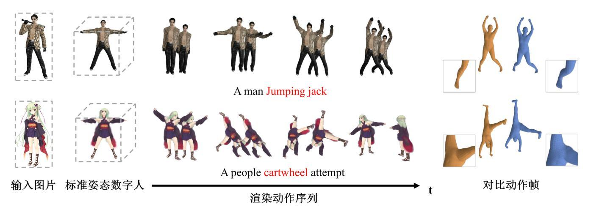
多场景应用
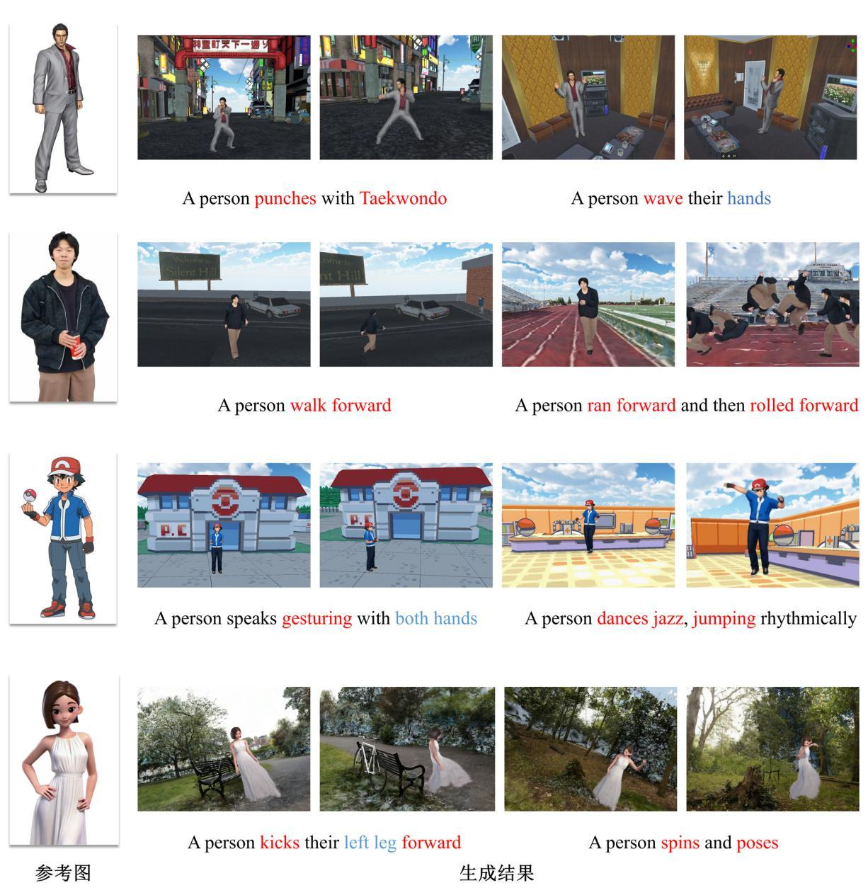
定量结果
定量结果正在按审稿意见补充实验并重新核算，修订完成后在此更新。
引用
@article{wang2026sdgs,
title = {基于结构解耦的三维高斯数字人动画生成},
author = {王雪平 and 廖偲宇 and 黄迪 and 闫飞虎 and 赵光哲},
journal = {计算机辅助设计与图形学学报},
year = {2026},
note = {审稿中}
}